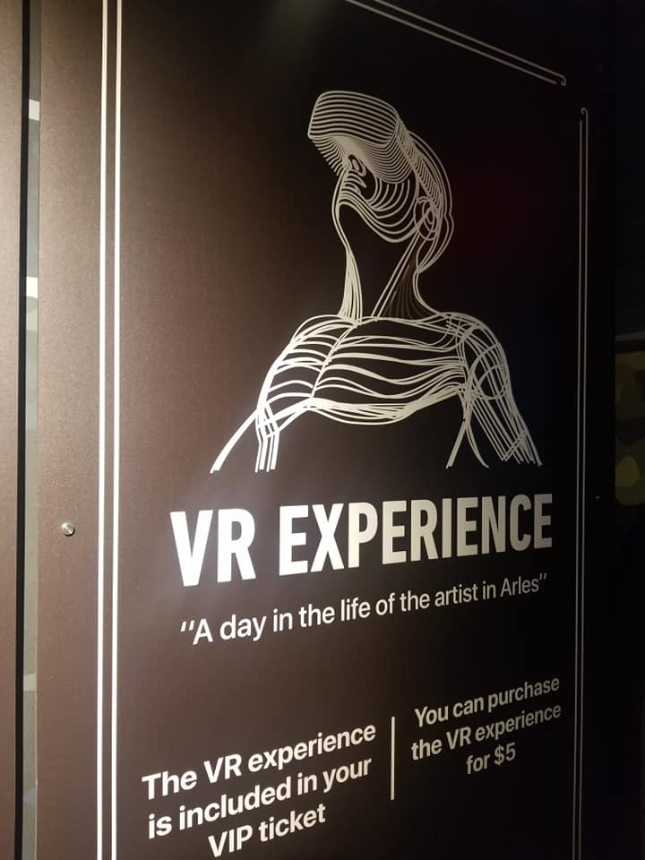
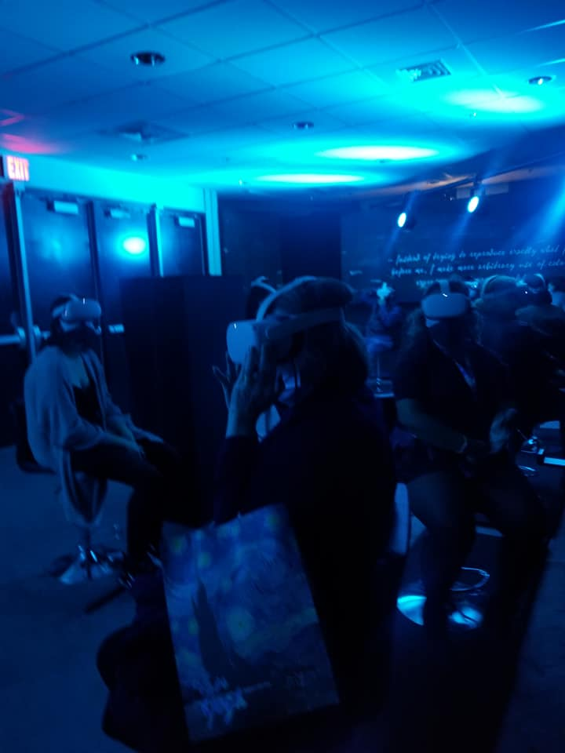

Upon arrival, I downloaded the exhibit's app and embarked on a self-directed journey through the exhibit. Each station featured a placard to read and an accompanying audio file narrating the script. While informative, I couldn't help but feel that the audio experience lacked immersion, wishing for a more seamless integration with the space itself. The exhibit itself was a mix of experiences, ranging from 3-dimensional rooms that added depth to Van Gogh's original masterpieces to expansive sensory spaces adorned with projections covering every surface. While some moments were captivating, others felt lackluster, failing to fully leverage the capabilities of technology to capture the essence of Van Gogh's artistry. However, amidst the mediocrity, one experience stood out: the VR experience. Stepping into the virtual world, I was transported to the landscapes that inspired Van Gogh's greatest works. The linear journey through France was nothing short of breathtaking, offering a fresh perspective on the artist's vision and creativity.
Overall, while the Immersive Van Gogh exhibit had its flaws, the VR experience undeniably stole the spotlight. Despite the exhibit's shortcomings, the VR tour succeeded in bringing Van Gogh's art to life in a truly immersive and unforgettable way. If you have the chance to attend the exhibit, be sure not to miss out on the VR experience—it's a true highlight in an otherwise mediocre event.